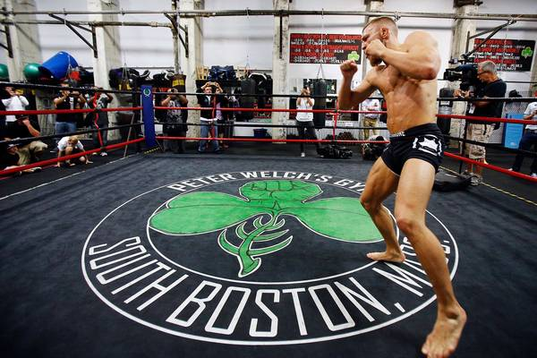

Boxing isn’t just about physical strength; it’s also a test of mental toughness. Every time I train, I push my limits and find new ways to improve. The intense workouts at Peter Welch's Gym help me refine my technique and stay in top shape, but the mental challenge is just as important. Staying focused, reading an opponent’s moves, and keeping calm under pressure are all critical skills in the ring.
Beyond training, I enjoy learning about the history and evolution of boxing. There’s so much to be inspired by when looking at the careers of iconic fighters like Muhammad Ali. His ability to adapt in the ring, combined with his charisma and larger-than-life personality, shows that boxing is as much an art as it is a sport. Ali’s philosophy of believing in oneself and never backing down has shaped my approach not only to boxing but to life as well.
One of the fun aspects of boxing is watching the frills and showmanship some fighters bring to the sport. From flashy entrances to personalized gear, fighters often express themselves in unique ways outside of the ring. But at the end of the day, it’s about skill, strategy, and heart—the things that really count once the bell rings.
